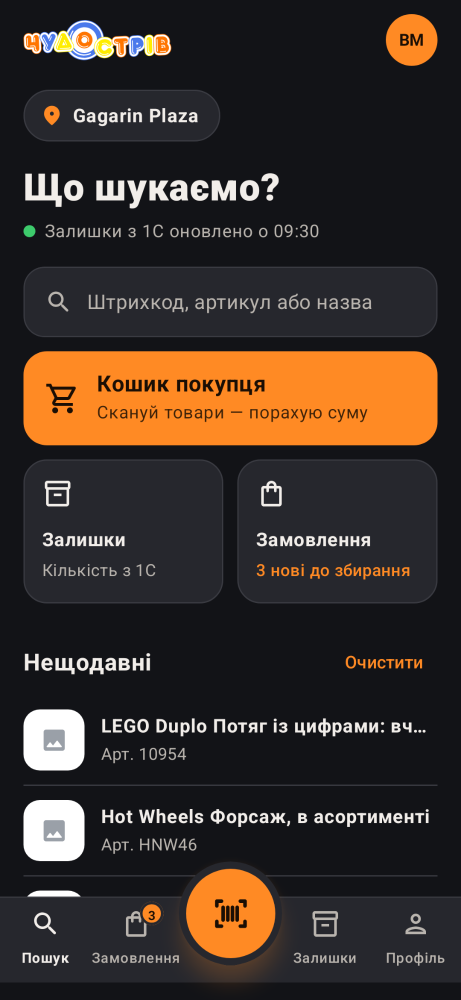
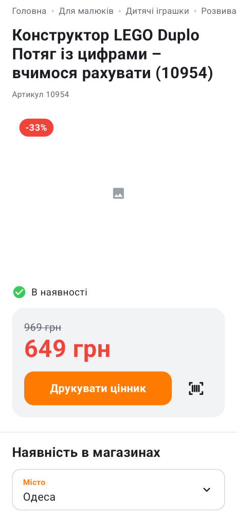
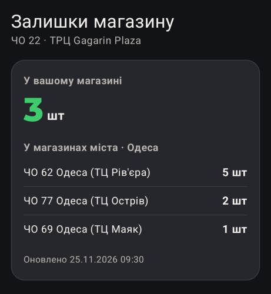
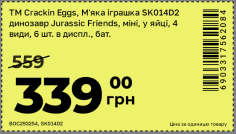
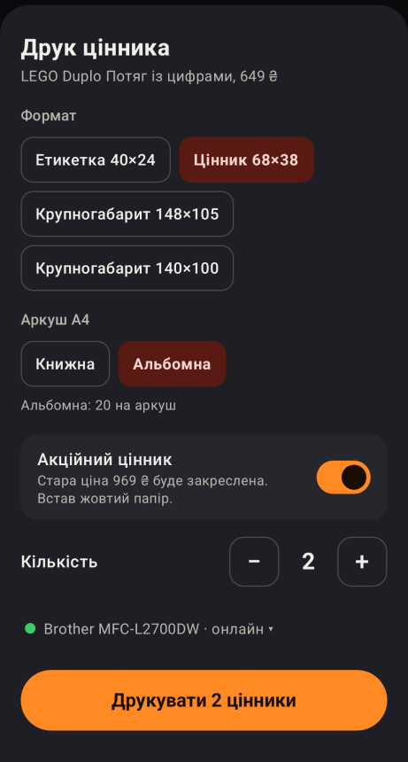
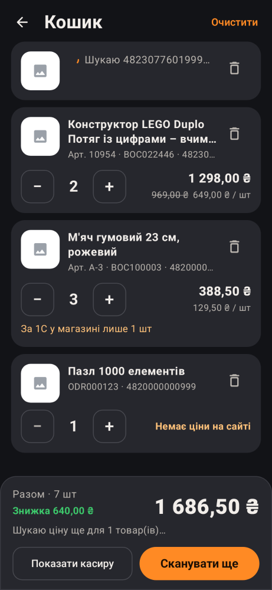

Помічник продавця в кишені: навів камеру на коробку — і за секунду бачиш ціну, скільки товару у своєму магазині й у магазинах міста. Цінник — однією кнопкою. Сума покупки — без калькулятора.

Щоб відповісти на просте «скільки коштує й чи є?», продавцю треба відійти до каси, шукати в 1С або дзвонити в інші магазини.
Один застосунок замість походів до каси й дзвінків. Звичайний Android-телефон, без спеціальних терміналів.
Камера сама читає код — без набору цифр. Пошук і за артикулом, кодом 1С чи назвою.
Ціна й назва — з сайту мережі, штрихкод, код і кількість — з 1С. Одне джерело правди.
Картка товару — як на сайті. Новий продавець розбирається за п'ять хвилин.





Вхід за номером і паролем; працювати можна лише після підтвердження адміном магазину.
Залишки завантажує тільки адмін залишків. Це перевіряють правила бази даних — обійти з телефона неможливо.
Дії адмінів — у журналі. Жодних паролів і ключів у застосунку чи на комп'ютерах магазинів.
Кожне правило доступу перевіряється автоматичними тестами перед кожною зміною.
«Немає в нас — є в сусідньому ТЦ, 5 шт» замість «немає». Продаж лишається в мережі.
Відповідь на «скільки коштує й чи є?» — за секунди, біля полиці, без походу до каси.
Дані беруться з 1С і сайту автоматично — нічого не переписується вручну.
Магазини не телефонують один одному, щоб дізнатися залишок.
Покупець знає суму покупки одразу — легше вирішити, що брати.
Новий продавець одразу бачить ціни й залишки, навіть не знаючи асортименту.
Приклад розрахунку (оцінка, не вимір): якщо кожен продавець економить хоча б 10 хвилин на день, то в 46 магазинах це ~7,5 години робочого часу щодня — майже повна зміна, яку можна віддати покупцям.
| Що потрібно | Чим зроблено | Ціна |
|---|---|---|
| База даних, вхід продавців | Firebase, безкоштовний тарифдо 50 000 читань і 20 000 записів на добу | 0 ₴ |
| Сторінка встановлення й завантаження залишків | GitHub Pages | 0 ₴ |
| Веб-версія (доступ до сайту мережі) | Cloudflare Workers, безкоштовний тарифдо 100 000 запитів на добу | 0 ₴ |
| Пристрої | Телефони продавців (Android 8+)без спеціальних терміналів збору даних | 0 ₴ |
| Принтери | Наявні Brother і Godex | 0 ₴ |
| Ліцензії, Google Play, абонплата | Власний код; встановлення з сайту, оновлення в застосунку | 0 ₴ |
Пишемо в базу лише зміни, а не весь файл щодня — тому мережа з 46 магазинів вміщається в безкоштовні ліміти. Якщо мережа виросте, Firebase бере плату лише за перевищення — центи за сотні тисяч операцій. Оплата з телефона (ПРРО) — окрема послуга за тарифом обраного сервісу.
Скан, ціни й наявність із сайту · залишки всієї мережі з 1С · цінники Brother і Godex, пакетний друк · ролі й адміністрування · завантаження залишків з ПК · кошик покупця · автооновлення застосунку
Готівка або картка, фіскальний чек через ПРРО (Checkbox або інший сервіс) — потрібне рішення мережі та бухгалтерії.
Локальна база на телефоні — працює навіть у ТЦ без зв'язку.
Інтернет-замовлення на самовивіз зі збиранням сканером; iPhone-версія в TestFlight.